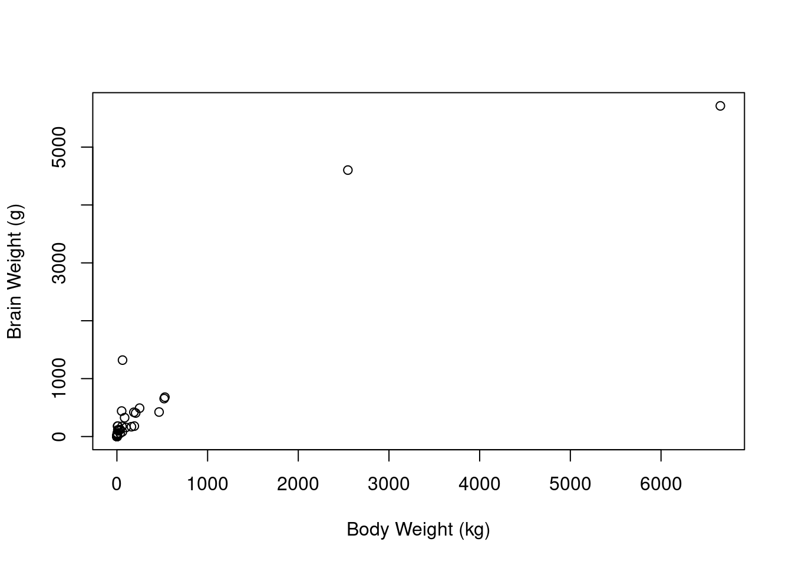
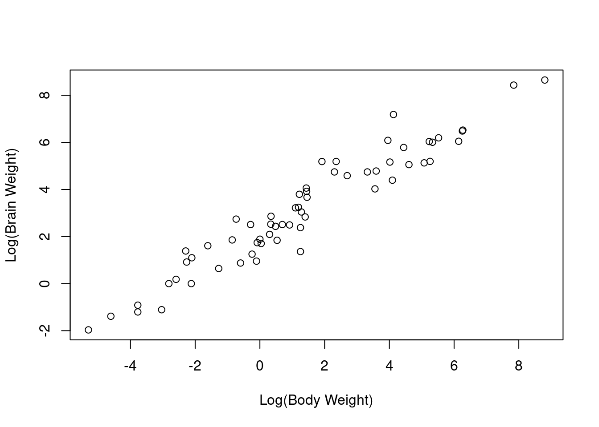
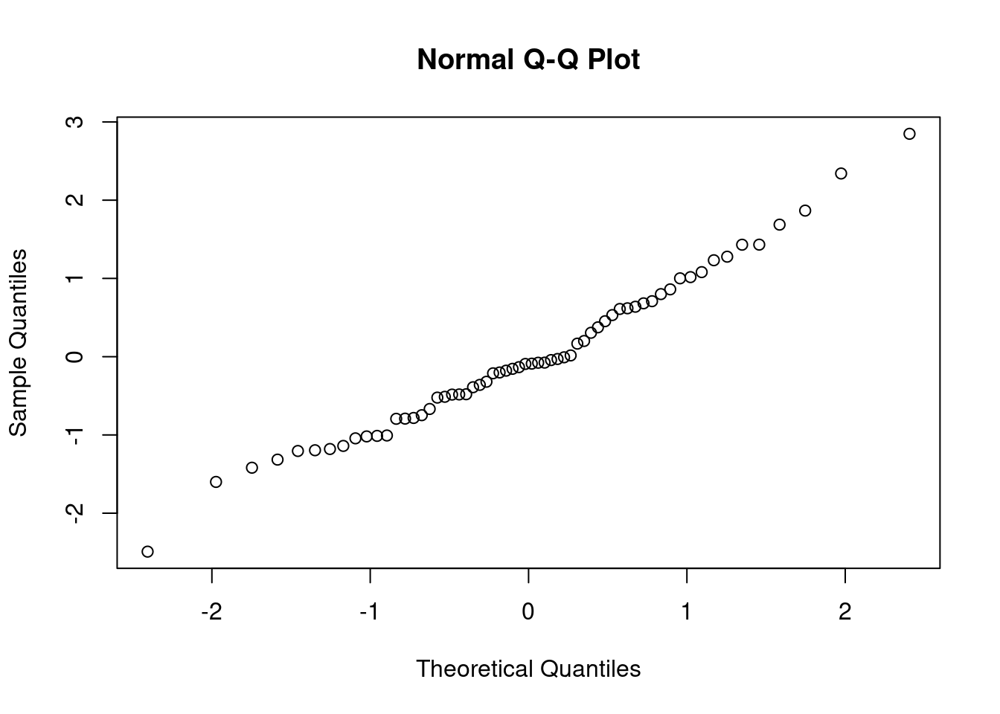

4 Example 3 - Mammal weight (log-transformation on both x and y)
This data was collected to analyse the relationship between constitutional and ecological factors and sleeping (dreaming and non-dreaming) in mammals.
Constitutional variables included life span, body weight, brain weight and gestation time. Ecological variables included severity of predation, safety of sleeping place and overall danger and were inferred from field observations in the literature.
We are interested in finding out if how body weight and brain weight are related.
Import your dataset and get familiar with the data within it.
(a) i. Produce a scatterplot of body weight versus brain weight.
mammals <- read.csv("MammalWeight.csv")
plot(brain_wt ~ body_wt, data = mammals, xlab = "Body Weight (kg)", ylab = "Brain Weight (g)")
- Perform a logtransformation on both variables and produce the scatterplot again with the new variables.
mammals <- read.csv("MammalWeight.csv")
plot(log(brain_wt) ~ log(body_wt), data = mammals, xlab = "Log(Body Weight)", ylab = "Log(Brain Weight)")
- Which of the scatterplots seems to show a linear relationship?
(b) i. Fit a simple linear regression model to describe the relationship between log(body weight) and log(brain weight).
Model1 <- lm(log(brain_wt) ~ log(body_wt), data = mammals)- Produce the residual plots and find the coefficient of determination, \(R^2\) to examine the fit of the model.
plot(rstandard(Model1) ~ fitted(Model1))
qqnorm(rstandard(Model1))
summary(Model1)##
## Call:
## lm(formula = log(brain_wt) ~ log(body_wt), data = mammals)
##
## Residuals:
## Min 1Q Median 3Q Max
## -1.71550 -0.49228 -0.06162 0.43597 1.94829
##
## Coefficients:
## Estimate Std. Error t value Pr(>|t|)
## (Intercept) 2.13479 0.09604 22.23 <2e-16 ***
## log(body_wt) 0.75169 0.02846 26.41 <2e-16 ***
## ---
## Signif. codes: 0 '***' 0.001 '**' 0.01 '*' 0.05 '.' 0.1 ' ' 1
##
## Residual standard error: 0.6943 on 60 degrees of freedom
## Multiple R-squared: 0.9208, Adjusted R-squared: 0.9195
## F-statistic: 697.4 on 1 and 60 DF, p-value: < 2.2e-16- Pick the correct interpretation of the model:
- Interpret the parameters correctly and enter any numbers to 4 decimal places:
The coefficient of log(body weight) is means as the log of the body weight increases by 1, the expected log of the brain weight by .
- Using the created model predict the brain weight of an animal if the body weight is 350kg, to 3 decimal places:
When predicting the value of the response for a new observation, we need to back transform the transformed response variable.
Brain weight = \(exp\bigg(\) + ( \(\cdot\) log()) \(\bigg)\) = g.